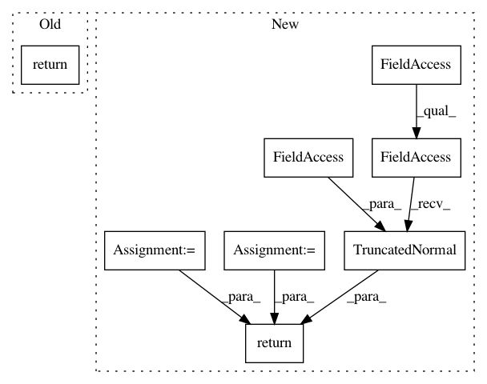

29d45e889b7695333d45171fc3b7e70d4629d067,official/nlp/tasks/masked_lm.py,MaskedLMTask,build_model,#MaskedLMTask#Any#,42
Before Change
def build_model(self, params=None):
params = params or self.task_config.model
return bert.instantiate_pretrainer_from_cfg(params)
def build_losses(self,
labels,
model_outputs,
After Change
def build_model(self, params=None):
config = params or self.task_config.model
encoder_cfg = config.encoder
encoder_network = encoders.build_encoder(encoder_cfg)
cls_heads = [
layers.ClassificationHead(**cfg.as_dict()) for cfg in config.cls_heads
] if config.cls_heads else []
return models.BertPretrainerV2(
mlm_activation=tf_utils.get_activation(config.mlm_activation),
mlm_initializer=tf.keras.initializers.TruncatedNormal(
stddev=config.mlm_initializer_range),
encoder_network=encoder_network,
classification_heads=cls_heads)
def build_losses(self,
labels,
model_outputs,
In pattern: SUPERPATTERN
Frequency: 4
Non-data size: 8
Instances
Project Name: tensorflow/models
Commit Name: 29d45e889b7695333d45171fc3b7e70d4629d067
Time: 2020-08-05
Author: hongkuny@google.com
File Name: official/nlp/tasks/masked_lm.py
Class Name: MaskedLMTask
Method Name: build_model
Project Name: tensorflow/models
Commit Name: 48e49875e3c13b140f67c39da67645bd1c1c392d
Time: 2020-08-05
Author: hongkuny@google.com
File Name: official/nlp/tasks/masked_lm.py
Class Name: MaskedLMTask
Method Name: build_model
Project Name: tensorflow/models
Commit Name: e8659893f95a52fae24abf5db04365b2ea39d69a
Time: 2020-07-06
Author: hongkuny@google.com
File Name: official/nlp/tasks/sentence_prediction.py
Class Name: SentencePredictionTask
Method Name: build_model
Project Name: tensorflow/models
Commit Name: 39fba153bae06e7c6528e1d0a87d19ecfac72c57
Time: 2020-07-06
Author: hongkuny@google.com
File Name: official/nlp/tasks/sentence_prediction.py
Class Name: SentencePredictionTask
Method Name: build_model